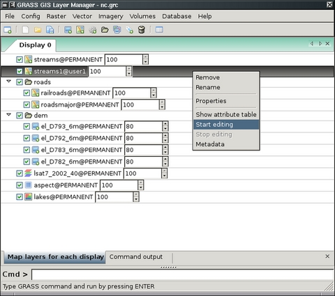
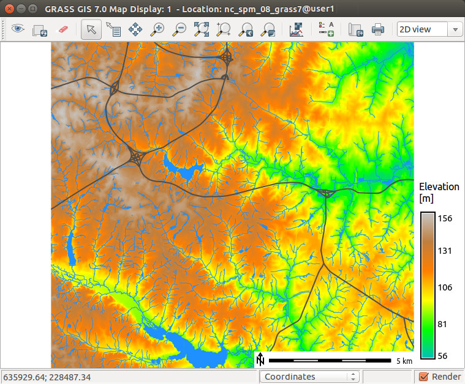

DESCRIPTION
wxGUI is native Graphical User Interface (GUI) for
GRASS GIS written in Python
using wxPython library.
If the wxGUI is not the default user interface, it can defined as default by
typing at the GRASS command line prompt:
Alternatively it may be defined in GISRC file
($HOME/.grass7/rc on GNU/Linux, $APPDATA\GRASS7\rc
on MS Windows) by GUI variable
or by the environmental variable GRASS_GUI.
The GUI can be quit by selecting the 'File -> Quit' menu item.
On MS Windows when the GRASS is stared without interactive command line,
'File -> Quit' ends the whole GRASS session.
The GUI can be restarted from the GRASS command line prompt by typing
To restart with previously saved workspace file:
g.gui wxpython workspace=file.gxw
The user can also start GRASS from the shell command line with the wxGUI
specifying the -gui (or -wxpython) switch:
The GUI is composed of two main components:
- The Layer Manager includes map layer management, integrated
command-line prompt, and command output window tab.
- The Map Display Window integrates basic tools for
zooming, panning, data querying, and map elements (north arrows,
barscale, etc.). Each display window is associated with its own
set of map layers in the layer manager. The user may start multiple map
displays during a session. The map layers for each display are grouped
under different tabs in the Layer Manager.
Layer Manager
The Layer Manager provides an interactive graphical interface for
creating and managing GRASS displays. There is a toolbar to manage displayed
map layers, a layer tree frame in which map layers for display are organized,
a command output window tab, and interactive command line prompt. On Linux
and Windows platforms, the layer manager also has a menu bar with a set of
pull-down menus for all GRASS GIS functions (analysis, file I/O, GIS
configuration and management); on a Mac, the GRASS functions menu is at the
top of the screen.

The top left button of the toolbar opens a new Map Display
Window. Each map display has a unique set of layers to display
and region settings. Other toolbar buttons add layers of different
types for display in the selected map display window. There are
additional buttons for saving or opening workspace file, and others.
Map layers are listed in the window frame below the toolbar. Layers can
include raster and vector maps, vector labels, and commands (where any
GRASS command can be written). Layers are displayed as arranged in the layer
tree: the bottom layer is displayed first and the top layer is displayed
last, as if the layers were a series of stacked overlays.
The check box to the left of each layer makes it active or inactive
for display. Only active layers are displayed/redisplayed when the
display button is pressed. Layers can be organized into groups; entire
groups can be activated or deactivated for display. Layer tree
composition can be saved to a workspace file and opened in subsequent
sessions, restoring all layers and their display options.
A right mouse click on a layer or left clicking the button to the right of
the layer opens a dropdown menu with options to remove or rename the layer
(g.remove, g.rename), change its display properties (d.rast and d.vect
options such as color, symbol, etc.), show its metadata (r.info, v.info) or
attributes, if applicable.
A left mouse double click on a layer opens GUI for its display options
These options are those for the d.* command for each layer type (d.rast,
d.vect, or d.grid, for example).
Layer Manager Toolbar
 Start new map display
Start new map display- Opens a new map display and creates empty layer tree tab in Layer Manager.
 Create new workspace
Create new workspace- Removes all layers from the layer tree and creates a new, empty tree
where new layers can be added.
 Open existing workspace file
Open existing workspace file- Opens an previously saved workspace file, containing a set of display
layers and their option settings.
 Save current workspace to file
Save current workspace to file- Saves current set of layers and their options to a workspace
file.
 Load map layers into workspace
Load map layers into workspace- Loads selected raster or vector maps into current layer tree.
 Add raster map layer
Add raster map layer- Adds raster map to layer tree, see d.rast.
 Add various raster map layers (RGB, HIS, shaded relief...)
Add various raster map layers (RGB, HIS, shaded relief...)- Opens a dropdown menu that allows user to select to:
 Add 3D raster map layer
Add 3D raster map layer- Adds 3D raster map to layer tree.
 Add RGB raster layer
Add RGB raster layer- Combines and displays three raster maps defined as red, green,
and blue channels to create an RGB color map,
see d.rgb.
 Add HIS raster layer
Add HIS raster layer- Combines and displays two or three raster maps defined as hue,
intensity, and (optionally) saturation channels to create a color map,
see d.his.
 Add shaded relief raster map layer
Add shaded relief raster map layer - Adds shaded relief raster map layer,
see d.shadedmap.
 Add raster arrows layer
Add raster arrows layer- Adds map of raster cells with directional arrows drawn. Arrow
direction and length are determined by separate aspect/directional map
and (optional) slope/intensity map,
see d.rast.arrow.
 Add raster numbers layer
Add raster numbers layer- Adds map of raster cells with numbers representing the cell values,
see d.rast.num.
 Add vector map layer
Add vector map layer- Adds a vector map layer,
see d.vect.
 Add various vector map layers (thematic, chart...)
Add various vector map layers (thematic, chart...)- Opens a dropdown menu that allows user to select to:
 Add thematic area (choropleth) map layer
(for all vector types)
Add thematic area (choropleth) map layer
(for all vector types)- Adds layer for thematic display values from a numeric attribute
column associated with a vector map. Options include: thematic display
type (graduated colors or point sizes), methods for creating display
intervals, SQL query of attribute column to limit vector objects to
display, control of point icon types and sizes, control of thematic
color schemes, creation of legend for thematic map, and saving the
results of thematic mapping to a ps.map instructions file for later
printing,
see d.vect.thematic.
 Add thematic chart layer (for vector points)
Add thematic chart layer (for vector points)- Adds layer in which pie or bar charts can be automatically created
at vector point locations. Charts display values from selected columns
in the associated attribute table. Options include: chart type, layer
and attributes to chart, chart colors, and chart size (fixed or based
on attribute column),
see d.vect.chart.
 Add group
Add group- Adds an empty group. Layers can then be added to the group.
 Add grid or vector labels overlay
Add grid or vector labels overlay- Opens a dropdown menu that allows user to select to:
 Add overlay grids and lines
Add overlay grids and lines- Adds layer to display regular grid (for all locations)
see d.grid
 Add labels layer for vector objects (from existing labels file)
Add labels layer for vector objects (from existing labels file)- Add a layer of text from a labels file for vector objects
created with the v.label module.
A labels file can also be created with a text editor,
see d.labels.
 Add geodesic line layer
Add geodesic line layer- Add layer to display geodesic line for latitude/longitude locations only,
see d.geodesic
-
Add rhumbline layer
- Add layer to display rhumblines (for latitude/longitude locations only),
see d.rhumbline.
 Add command layer
Add command layer- Adds a layer in which a GRASS GIS command or command list can be entered.
For a command list use the semi-colon (";") symbol as a separator.
For example:
d.rast soils;d.rast -o roads;d.vect streams col=blue
d.text text=Population\ density
 Delete selected layer
Delete selected layer- Removes selected map layer or map layer group from layer tree.
 Edit vector maps
Edit vector maps- Opens vector digitizer to allow editing selected vector map.
 Show attribute table
Show attribute table- Opens attribute table manager for selected vector map.
-
Import raster or vector data
-
 Import raster data
Import raster data- Import selected raster data into GRASS
using r.in.gdal and load
them into current layer tree.
-
Link external raster data
- Link selected external raster data as GRASS raster maps
(using r.external) and
load them into current layer tree.
 Set raster output format
Set raster output format- Define external format for newly created raster maps
(see r.external.out
for details)
-
Import vector data
- Import selected vector data into GRASS
using v.in.ogr and load
them into current layer tree.
-
Link external vector data
- Link selected external vector data as GRASS vector maps
(using v.external) and
load them into current layer tree.
-
Set vector output format
- Define external format for newly created vector maps
(see v.external.out
for details)
 Raster Map Calculator
Raster Map Calculator- Launches Raster Calculator GUI front-end
for r.mapcalc.
 Graphical Modeler
Graphical Modeler- Launches graphical
modeler to create models and run them.
 Georectifier Tool
Georectifier Tool- Launches GCP
Manager to create, edit, and manage Ground Control
Points.
 Cartographic Composer
Cartographic Composer- Launches Cartographic
Composer to create interactively hardcopy map
outputs.
 Show GUI settings
Show GUI settings- Opens dialog to change GUI settings.
 Show help
Show help- Opens GRASS manual.
Key shortcuts
- Ctrl+Tab
- Switch 'Map layers' and 'Command output' tab
- Ctrl+Q
- Quit
Workspace
- Ctrl+N
- Create new workspace
- Ctrl+O
- Load workspace from file
- Ctrl+S
- Close workspace
Map Layers
- Ctrl+Shift+L
- Add multiple raster or vector map layers to current map display
- Ctrl+Shift+R
- Add raster map layer to current map display
- Ctrl+Shift+V
- Add vector map layer to current map display
- Ctrl+W
- Close current map display
Command line prompt
- Tab
- Show command tooltips
- Esc
- Hide command tooltips
- Ctrl+Space
- Map entries without arguments (as in r.info [mapname])
- Up/Down
- List command history
- Enter
- Run command
Map Display Window
The map display window includes toolbar that can be docked and undocked from
the window, a map canvas where a map composition of one or more layers is
displayed, and a statusbar with information about the geographic region of
the maps displayed.

Each Map Display Window has a unique layer tree (in the layer manager)
and geographic region setting. At the top of the window is a
toolbar with buttons to manage the map in the display (render, erase, zoom
and pan), for query and and analysis (distance measurement, profile,
and histogram creation), to overlay map elements onto the display (scale,
north arrow, legend, and custom text), and to export or print the display.
In the statusbar, the user can choose to display the geographic coordinates
under the cursor, current geographical region extent, computational region
(including graphical visualization in map display), map display geometry
(number of rows, columns, resolution) and map scale. Checking the
render button in the statusbar will cause the map display to update
automatically any time a map is added to, removed from, or changed in its
layer tree.
It is important to note that zooming in any display will
have no effect on the 'computational region' setting (set
with g.region). Only by selecting
the 'Set current region to match display' item in the zoom menu (in
the map display toolbar) will the current display extents be copied to
the computational region extents.
Map Display Toolbar
 Display map
Display map- Displays all active layers from layer tree and re-renders for display
any layers that have changed since the last time the display was updated,
including layers added or removed.
 Re-render map
Re-render map- Re-renders all active layers regardless of whether they have changed
or not.
 Erase display
Erase display- Erases the currently selected map display to a white background.
see d.erase.
 Pointer
Pointer- Select arrow cursor for map display.
 Query raster/vector maps
Query raster/vector maps- Opens a dropdown menu that allows user to select to:
- Display mode
- Query selected raster, RGB raster (all three map channels will be
queried), or vector map(s) using the mouse. Map(s) must be selected
before query. Vector charts and thematic vector maps cannot be
queried. The results of the query will be displayed in the console window,
see r.what, v.what.
- Edit mode
- Query selected vector map in edit mode. The results of the query
will be displayed in a form that permits editing of the queried vector
attributes.
 Pan
Pan- Interactive selection of a new center of view in the active
display monitor. Drag the pan cursor while pressing the left mouse
button to pan. Panning changes the location of the region displayed
but not the size of the area displayed or the resolution. Panning
does not affect the computational region for other GIS
processes, see g.region.
 Zoom in
Zoom in- Interactive zooming with the mouse in the active display monitor.
Drawing a box or just click with the mouse (left button) and zoom-in
cursor causes the display to zoom in so that the area defined by the
box fills the display. The map resolution is not changed. Clicking
with the zoom-in cursor causes the display to zoom in by 30%, centered
on the point where the mouse is clicked. Zooming resets the display
region extents (both size and location of area displayed). It
does not affect the computational region for other GIS
processes, see g.region.
 Zoom out
Zoom out- Interactive zooming with the mouse in the active display monitor.
Drawing a box or just click with the mouse (left button) and zoom-out
cursor causes the display to zoom in so that the area displayed
shrinks to fill the area defined by the box. The map resolution is not
changed. Clicking with the zoom-out cursor causes the display to zoom
out by 30%, centered on the point where the mouse is clicked. Zooming
resets the display region extents (both size and location of area
displayed). It does not affect the computational region for
other GIS processes,
see g.region.
 Zoom to selected map(s)
Zoom to selected map(s)- Set zoom extent based on selected raster or vector maps. Zooming
resets the display region extents (both size and location of area
displayed). It does not affect the computational region
for other GIS processes,
see g.region.
 Return to previous zoom
Return to previous zoom- Returns to the previous zoom extent. Up to 10 levels of zoom back are
maintained, see g.region.
 Zoom options
Zoom options- Opens a dropdown menu that allows user to:
- Zoom to match the extents of a selected map
- Zoom to match the computational region (set with g.region)
- Zoom to match the extents of the default region
- Zoom to match the extents of a saved region
- Set computational region (the mapset's WIND file) to match the
current display extents (does not change the resolution),
see g.region.
- Save display geometry (current extents) to a named region file
 Analyze menu
Analyze menu- Opens a dropdown menu with:
 Distance measurement tool
Distance measurement tool- Interactive measurement of lengths defined with the mouse. The
length of each segment and the cumulative length of all segments
measuered is displayed in the command output window frame. Lengths are
measured in the current measurement unit.
 Profile tool
Profile tool- Interactively create profile of a raster map. Profile transect is
drawn with the mouse in map display. The profile may be of the
displayed map or a different map. Up to three maps can be profiled
simultaneously.
-
Bivariate scatterplot
- Interactively create pbivariate scatterplot of raster
maps.
 Histogrammig tool
Histogrammig tool- Displays histogram of selected raster map or image in new
window.
-
Histogramming tool (d.histogram)
- Displays histogram of selected raster map or image in new
window,
see d.histogram.
 Add overlay
Add overlay- opens a dropdown menu that allows user to
 Add scalebar and north arrow
Add scalebar and north arrow- Adds layer to display a combined scalebar and north arrow. Options
include scalebar placement (using screen coordinates or a mouse),
scalebar format, and scalebar colors,
see d.barscale.
 Add raster map legend
Add raster map legend- Adds layer to display with legend of selected raster map,
see d.legend.
 Add text layer
Add text layer- Adds layer to display a line of text using default GRASS font
(selected with d.font). Options
include: text placement (screen coordinates); and text size, bolding,
and color, see d.text.
 Save display to graphic file
Save display to graphic file- Save the visible image in map display to different raster graphic formats.
 Print map
Print map- Prints map on system native printer or PostScript device;
saves visible map display (including PostScript text and labels) to PDF
or EPS file.
- Map display mode
- Opens a dropdown menu for selecting different display mode
- 2D view mode
- Normal GIS display. All active layers are composited and displayed
in 2D mode.
- 3D view mode
- Experimental replacement for NVIZ. Displays all active layers in
3D perspective using OpenGL. A new control panel opens to manage the
3D view. 3D view can be zoomed, panned, rotated, and tilted. The
vertical exaggeration of rasters and 3D vectors can be set. Various
color and lighten settings are possible. Not yet functional for
Windows platforms
- Digitize mode
- Puts display into vector digitizing mode and opens a new digitizing
toolbar. The user can digitize a new map or edit an existing
map. Not yet functional for Windows platforms
SEE ALSO
wxGUI components
See also wxGUI wiki
page
(especially various video
tutorials),
and Quick
wxGUI Tutorial.
AUTHORS
Martin Landa, FBK-irst (2007-2008), Trento, Italy, and Czech Technical University in Prague, Czech Republic
Michael Barton, Arizona State University, USA
Daniel Calvelo Aros
Jachym Cepicky
Markus Metz, Germany
Anna Kratochvilova, Czech Technical University in Prague, Czech Republic
Vaclav Petras, Czech Technical University in Prague, Czech Republic
Stepan Turek, Czech Technical University in Prague, Czech Republic
Icons created by Robert Szczepanek, Poland (SVN)
$Date$